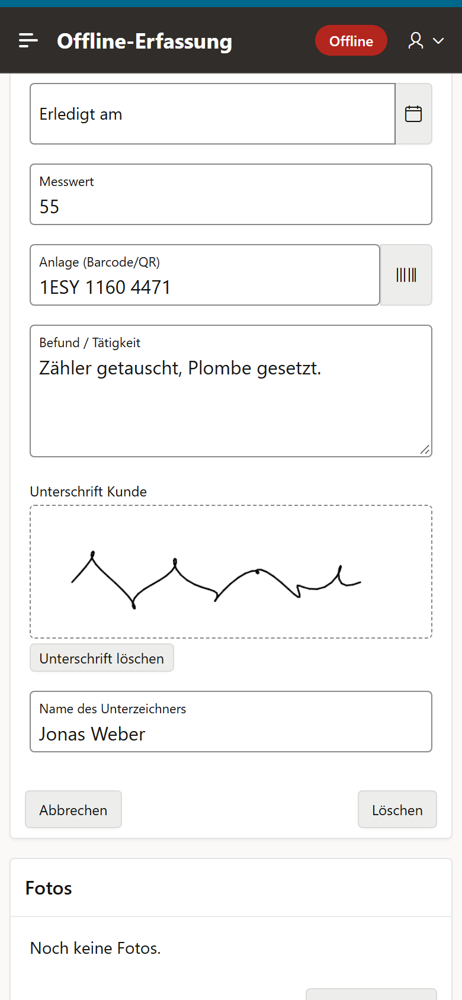
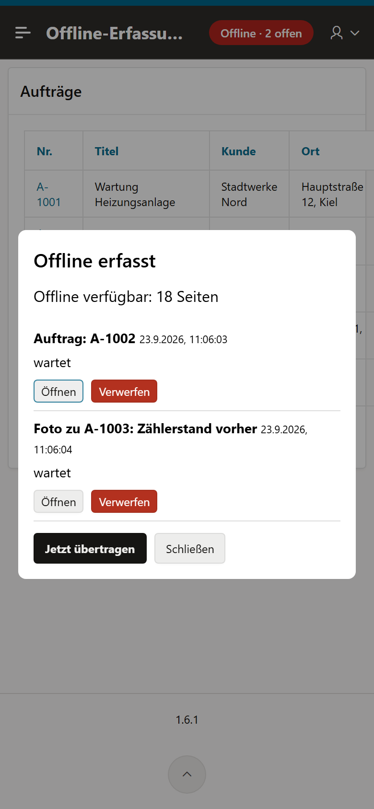
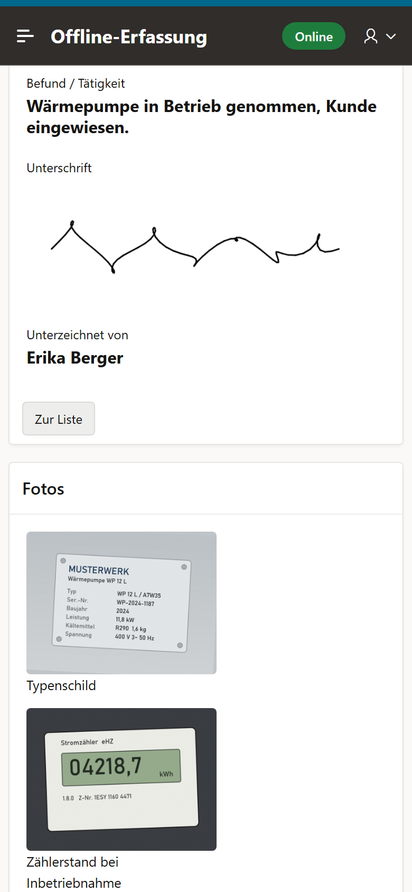
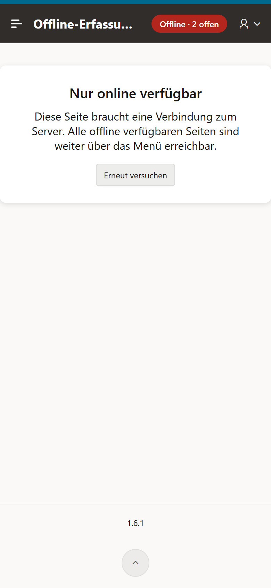

Kein Netz: Speichern legt einen Entwurf auf dem Gerät an.

Jede Erfassung mit Status – öffnen, verwerfen oder gleich übertragen.

Unterschrift und Fotos, druckfertig aus der Datenbank.

Auswertungen zeigen ohne Netz einen Hinweis statt alter Zahlen.